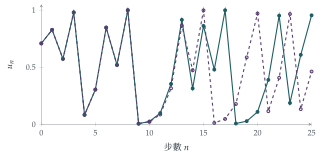

STEP I 2014，第 6 題
繼續之前，請先閱讀題目（原題為英文）。題目載於 STEP Support Programme 的題目資料庫： step.maths.org/questions/14-s1-q6
引子
規則 \(u_{n+1} = ku_n(1 - u_n)\) 稱為邏輯斯諦映射（logistic map），是描述資源有限的種羣的最簡單模型：\(u_n\) 是第 \(n\) 年的種羣數量佔環境所能承載的最大數量的比例，\(k\) 是繁殖率，而因子 \(1 - u_n\) 則代表過度擁擠的影響。1976 年，生物學家羅伯特·梅（Robert May）在《自然》（Nature）上發表了一篇短文，題為「Simple mathematical models with very complicated dynamics」（動力學行為非常複雜的簡單數學模型）。他指出，當 \(k\) 逐漸增大至 \(4\) 時，這條只有一行的規則會由趨於穩定，變為來回振盪，再變為看似完全隨機。它成為了混沌（chaos）理論的奠基例子之一。
混沌系統通常無法求解：\(u_n\) 沒有公式，要求出 \(u_{100}\)，唯一的方法就是把它之前的各項逐一算出來。本題找到的正是那個例外。在 \(k = 4\) 這個最混沌的取值上，公式確實存在，而且它恰好解釋了這個數列為何無法預測。
動筆之前
你以前在哪裏見過 \(4s(1 - s)\) 這個式子，其中 \(s = \sin^2\theta\)？哪一條恆等式把 \(\sin^2\theta\)、\(\cos^2\theta\) 和 \(\sin 2\theta\) 聯繫起來？
若 \(s = \sin^2\theta\)，則 \(1 - s = \cos^2\theta\)，所以 \(4s(1 - s) = 4\sin^2\theta\cos^2\theta = (2\sin\theta\cos\theta)^2 = \sin^2 2\theta\)。映射 \(s \mapsto 4s(1 - s)\) 其實就是喬裝了的倍角公式（double-angle formula）。
逐步解題
階段 1 猜出規律
設 \(u_0 = \sin^2\theta\)，由上面的恆等式可得 \[u_1 = 4\sin^2\theta\cos^2\theta = \sin^2 2\theta, \qquad u_2 = 4\sin^2 2\theta\cos^2 2\theta = \sin^2 4\theta.\]
每一步之後，角度有甚麼變化？你對 \(u_n\) 有甚麼猜想？
角度每次都加倍，所以我們猜想（conjecture）\(u_n = \sin^2(2^n\theta)\)。
階段 2 證明猜想
一個數列由「從一項到下一項」的規則定義，而我們要證明的命題涉及數列的每一項。哪一種證明方法最合適？
歸納法（induction）。命題在 \(n = 0\) 時成立，因為 \(u_0 = \sin^2\theta = \sin^2(2^0\theta)\)。假設對某個 \(n\) 有 \(u_n = \sin^2(2^n\theta)\)，則 \[u_{n+1} = 4\sin^2(2^n\theta)\bigl(1 - \sin^2(2^n\theta)\bigr) = \bigl(2\sin(2^n\theta)\cos(2^n\theta)\bigr)^2 = \sin^2(2^{n+1}\theta),\] 這正是 \(n + 1\) 時的命題。所以對所有 \(n \geq 0\)，都有 \(u_n = \sin^2(2^n\theta)\)。■
留意 \([0, 1]\) 內的每一個初始值 \(u\) 都可以寫成 \(\sin^2\theta\)（取 \(\theta = \arcsin\sqrt u\)），所以對於 \([0, 1]\) 內的任何初始值，這個公式都解出了 \(k = 4\) 的邏輯斯諦映射。
階段 3 變數代換
把 \(v_n = \alpha u_n + \beta\) 代入 \(v_{n+1}\) 的規則。你需要結果是 \(u_{n+1} = 4u_n - 4u_n^2\)。這會給出多少個條件？你又有多少個未知數？
代入後得 \[\alpha u_{n+1} + \beta = -p(\alpha u_n + \beta)^2 + q(\alpha u_n + \beta) + r,\] 所以 \[u_{n+1} = -p\alpha\, u_n^2 + (q - 2p\beta)\, u_n + \frac{-p\beta^2 + q\beta + r - \beta}{\alpha}.\] 要使它等於 \(4u_n - 4u_n^2\)，需要滿足三個條件： \[p\alpha = 4, \qquad q - 2p\beta = 4, \qquad -p\beta^2 + (q - 1)\beta + r = 0.\] 頭兩個條件確定了 \(\alpha = 4/p\) 和 \(\beta = (q - 4)/(2p)\)。這時已經沒有未知數剩下，所以第三條方程是對 \(p\)、\(q\) 和 \(r\) 的一個真正的條件。代入 \(\beta\) 並乘以 \(4p\)，得 \[-(q - 4)^2 + 2(q - 1)(q - 4) + 4pr = 0,\] 展開後得 \(-(q^2 - 8q + 16) + (2q^2 - 10q + 8) + 4pr = 0\)，即 \(q^2 - 2q - 8 + 4pr = 0\)，亦即 \[4pr = 8 + 2q - q^2. \qed\]
三條方程，卻只有兩個未知數：這就是出現條件的原因。你能否在未計算之前，就看出為甚麼一般的二次映射不應該總是與 \((*)\) 等價？（想想線性的變數代換能改變甚麼，又不能改變甚麼。）
階段 4 例子
對於 \(v_{n+1} = -v_n^2 + 2v_n + 2\)，我們有 \(p = 1\)、\(q = 2\)、\(r = 2\)，而 \(4pr = 8 = 8 + 4 - 4\)，所以條件成立。於是 \(\alpha = 4\) 及 \(\beta = -1\)，所以 \(v_n = 4u_n - 1\)，其中 \(u_n\) 滿足 \((*)\)。由於 \(v_0 = 1\)，故 \(u_0 = \frac12 = \sin^2\frac{\pi}{4}\)，所以 \[u_n = \sin^2\!\Bigl(\frac{2^n\pi}{4}\Bigr), \qquad v_n = 4\sin^2\!\Bigl(\frac{2^n\pi}{4}\Bigr) - 1 = 1 - 2\cos\Bigl(\frac{2^n\pi}{2}\Bigr).\] 由此得 \(v_0 = 1\)、\(v_1 = 3\)，而對所有 \(n \geq 2\) 都有 \(v_n = -1\)。（直接驗算：\(-1 + 2 + 2 = 3\)，然後 \(-9 + 6 + 2 = -1\)，再然後 \(-1 - 2 + 2 = -1\)。）■
這個初始值是特意選定的，好讓角度落在 \(\pi\) 的倍數上，數列從此不再變化。這樣一來，有趣的部分就被掩蓋了，而那正是接下來要談的。
回顧
識破喬裝。一旦寫成 \(s = \sin^2\theta\)，映射 \(s \mapsto 4s(1 - s)\) 就變成了角度加倍。
先猜想，再用歸納法證明。頭兩項提示了規律，歸納法則證明了它。
數一數方程和未知數。線性代換有兩個自由參數，二次式有三個係數，所以必定剩下一個條件。
背後的數學
數列為何無法預測
公式 \(u_n = \sin^2(2^n\theta)\) 看來已是故事的結局：任何一項都可以直接算出。但請細看它說了甚麼。由於 \(\sin^2\) 的週期（period）是 \(\pi\)，所以只有 \(2^n\theta\) 模（modulo）\(\pi\) 的值才有影響。設 \(\theta = \pi x\)，其中 \(0 \leq x < 1\)，並把 \(x\) 寫成二進制（binary）： \[x = 0.b_1 b_2 b_3 \ldots \quad(\text{底為 } 2).\] 乘以 \(2\) 會把二進制小數點向右移一位，而把結果取模 \(1\)，就是丟掉越過小數點的那個數位。所以 \(u_n\) 只取決於 \(x\) 由 \(b_{n+1}\) 起的二進制數位。邏輯斯諦映射每走一步，就多讀取初始值的一個數位，同時丟掉最前面的一個。
這就是對初始條件的敏感依賴（sensitive dependence on initial conditions），也是混沌的決定性特徵。兩個初始值若在首 \(20\) 個二進制位上相同（約六個小數位），它們產生的數列一般會在大約 \(20\) 步之內吻合，其後便毫無關係（圖 8.7.1）。要預測 \(u_{100}\)，你需要知道 \(u_0\) 準確至 \(100\) 個二進制位。初始角度的任何誤差，無論多小，每一步都會加倍。（種羣數量 \(u\) 本身的誤差並非每次都以完全相同的倍數增長，因為這個映射對 \([0, 1]\) 某些部分的拉伸比其他部分大，但平均而言，它的增長率是一樣的。）公式幫不上忙：它只是令這個機制顯現出來。

週期點無處不在
這個公式還能找出映射的每一個循環（cycle）。數列在 \(N\) 步之後回到初始值，當且僅當 \(\sin^2(2^N\theta) = \sin^2\theta\)，即 \(2^N\theta \equiv \pm\theta \pmod{\pi}\)。所以 \(\theta = m\pi/(2^N - 1)\) 或 \(\theta = m\pi/(2^N + 1)\) 給出一個週期整除 \(N\) 的點。例如 \(\theta = \pi/5\) 滿足 \(4\theta \equiv -\theta\)，所以 \(\sin^2\frac{\pi}{5} \to \sin^2\frac{2\pi}{5} \to \sin^2\frac{4\pi}{5} = \sin^2\frac{\pi}{5}\) 是一個 \(2\)-循環。每一個週期都有對應的週期點（periodic point），而且它們在 \([0, 1]\) 中稠密（dense）：在每一個區間內，無論多小，都有一個初始值使數列重複出現。然而每一個週期點都是不穩定的，因為任何誤差都會加倍。稠密的週期點，卻把附近的一切都推開，這是混沌的第二個標誌。
通往混沌之路
對於較小的 \(k\)，並沒有公式可用，而數列的行為會隨 \(k\) 劇烈變化（圖 8.7.2）。當 \(1 < k < 3\) 時，每一個由 \((0, 1)\) 內出發的數列都會趨於不動點（fixed point）\(1 - 1/k\)。在 \(k = 3\) 時，不動點變得不穩定，由一個 \(2\)-循環取而代之（這是 STEP II 2002 Q5 的主題；見延伸練習）。在 \(k = 1 + \sqrt6 \approx 3.449\) 時，\(2\)-循環讓位予 \(4\)-循環，然後是 \(8\)-循環，週期加倍來得愈來愈快，直至 \(k \approx 3.5699\) 時，循環的長度變成無限，混沌由此開始。在混沌區域之內還有一些有序的窗口：最明顯的一個在 \(k = 3.83\) 附近，其中有一個 \(3\)-循環，那是 第 8.8 節 的主題。

1975 年，費根鮑姆（Mitchell Feigenbaum）在洛斯阿拉莫斯（Los Alamos）工作時，用一部可編程的袖珍計算機，量度了週期加倍時的各個 \(k\) 值：\(k_1 = 3\)、\(k_2 \approx 3.4495\)、\(k_3 \approx 3.5441\)、\(k_4 \approx 3.5644\)、…。他留意到這些間距以一個固定的倍數縮小， \[\frac{k_{n} - k_{n-1}}{k_{n+1} - k_{n}} \to 4.6692\ldots,\] 然後更令人驚訝地發現，同一個數 \(4.6692\ldots\) 也出現在 \(x \mapsto k\sin(\pi x)\) 之中，以及其他所有只有單一個峯、而峯頂像拋物線般圓滑（即二次極大值，quadratic maximum）的光滑映射之中。這個常數對這一整類映射是普適（universal）的；至於峯頂較平坦的映射，例如形狀像 \(-x^4\) 的那種，則各有自己的普適常數。其後，人們在滴水的水龍頭、受熱的流體和電子電路的實驗中都量度到這個常數。要解釋箇中原因，需要借用相變（phase transition）物理學的想法，而嚴格的證明要到 1982 年才由 Oscar Lanford 藉助電腦完成。
同一招，用三次
第 (ii) 部分的代換是共軛（conjugacy）的一個例子：若一個變數代換能把一個映射變成另一個，這兩個映射便稱為共軛，而它們的動力學行為完全相同。本題證明了每一個滿足該條件的二次映射，都與 \(k = 4\) 的邏輯斯諦映射共軛，而後者又透過 \(u = \sin^2\theta\)，成為喬裝了的角度加倍。（嚴格來說，最後這一環是半共軛（semiconjugacy）：\(\theta\) 和 \(\pi - \theta\) 給出相同的 \(u\)，所以這個變數代換並非一對一（one-to-one）。邏輯斯諦映射真正共軛的對象是帳篷映射（tent map），即當 \(t \leq \frac12\) 時 \(t \mapsto 2t\)、當 \(t \geq \frac12\) 時 \(t \mapsto 2 - 2t\)，所用的代換是 \(u = \sin^2\frac{\pi t}{2}\)，它在 \([0, 1]\) 上是一對一的。）在 第 2.8 節 中，你遇過 \(x \mapsto x^2 - 2\)，它由 \(x = 2\cos\theta\) 解出，角度每一步加倍；它同樣滿足該條件（不妨試試）。所以這些全都是同一個映射的不同喬裝。在 第 8.8 節 中，這個家族的第三位成員將會登場：一個由直線構成的映射，即帳篷映射。
思維技巧
一個好的代換可以把複雜的規則變成簡單的規則。設法找出一個變數代換，把問題變成你已經明白的問題。
在這裏，\(u = \sin^2\theta\) 把一個二次映射變成了角度加倍，而一個線性代換則把一整族二次式歸結為一個。在大學裏，共軛是一件核心工具：在動力系統（dynamical systems）中，在線性代數中（把矩陣對角化，就是選取一組令它變得簡單的坐標），以及在羣論中，都是如此。
延伸練習
邏輯斯諦映射的循環。試做 STEP II 2002，第 5 題。然後證明只有當 \(k > 3\) 時才存在 \(2\)-循環。
平方減二。證明 \(v_{n+1} = v_n^2 - 2\) 滿足第 (ii) 部分的條件（把它寫成 \(-pv_n^2 + qv_n + r\)，其中 \(p = -1\)）。求 \(\alpha\) 和 \(\beta\)，並驗證你的答案與 \(v_n = 2\cos(2^n\phi)\) 一致。
一個 \(3\)-循環。利用公式 \(u_n = \sin^2(2^n\theta)\)，求 \(u_{n+1} = 4u_n(1 - u_n)\) 的一個 \(3\)-循環。（提示：試試 \(\theta = \pi/7\)，或 \(\theta = \pi/9\)。）週期恰好為 \(3\) 的點有多少個？
丟失數位。電腦儲存數字時，大約準確至 \(53\) 個二進制位。如果你在電腦上迭代 \(u_{n+1} = 4u_n(1 - u_n)\)，大約多少步之後，計算出來的值便與真正的數列毫無關係？到那時，計算出來的數列是否就沒有用處？
延伸閱讀
Robert May，「Simple mathematical models with very complicated dynamics」，Nature 261 (1976)。經典之作，至今仍然十分易讀。
James Gleick，Chaos: Making a New Science（Penguin）。講述梅、費根鮑姆以及混沌被發現的故事。
Steven Strogatz，Nonlinear Dynamics and Chaos（CRC Press），第 10 章。一維映射、邏輯斯諦映射和費根鮑姆常數，程度相當於大學一年級。
Ian Stewart，Does God Play Dice?（Penguin）。一本介紹混沌的科普讀物，其中有一章對邏輯斯諦映射講解得很好。